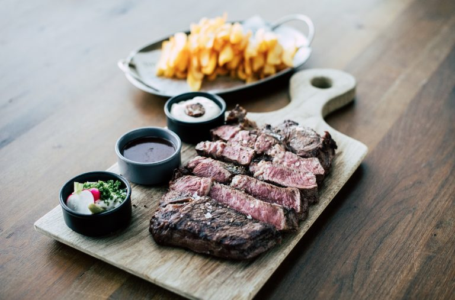
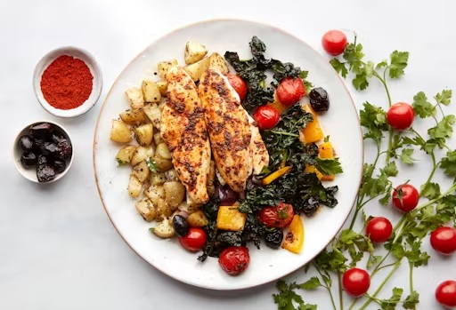

MAIN MEALS
1. Chargrilled Prime Sirloin
Sides: Caramelised Onions, Peppercorn Cream, Chips
Cured and marinated salmon is a flavorful dish featuring salmon fillets cured with salt and sugar, then marinated with citrus, herbs, and spices. Served with avocado, cucumber, wasabi, and soy sauce, it offers a refreshing balance of creamy, crunchy, spicy, and savory flavors.
Price: R 295
Serves: 1
2. Free Range Breast of Chicken
Sides: Foie Mousse, Crispy Leg, Cavalo Nero, Chicken Butter
Free-range breast of chicken, s a premium dish featuring tender chicken breast from free-range poultry. Accompanied by foie mousse, crispy chicken leg, cavalo nero, and chicken butter, it offers a luxurious dining experience with rich flavors and textures.
Price: R 200
Serves: 1
3. Grilled Monkfish “T-Bone”
Sides: Onion, Fennel, Butter Sauce
Grilled monkfish "T-Bone" features thick monkfish fillets grilled to perfection, resembling a T-bone steak. Served with caramelized onion, fennel, and butter sauce, it offers a harmonious blend of sweet and savory flavors, creating a gourmet seafood experience.